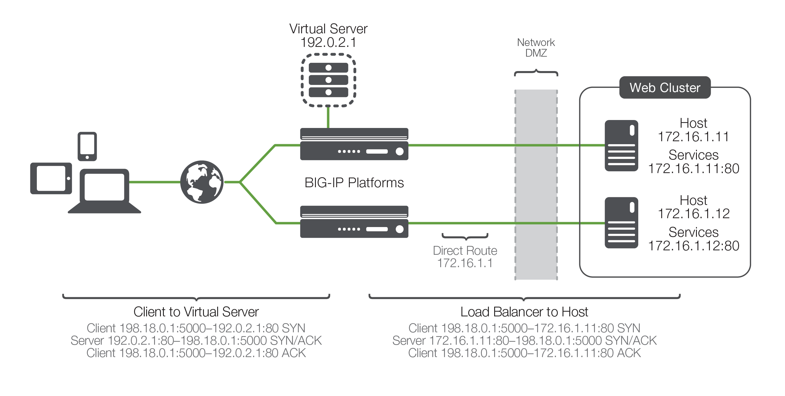
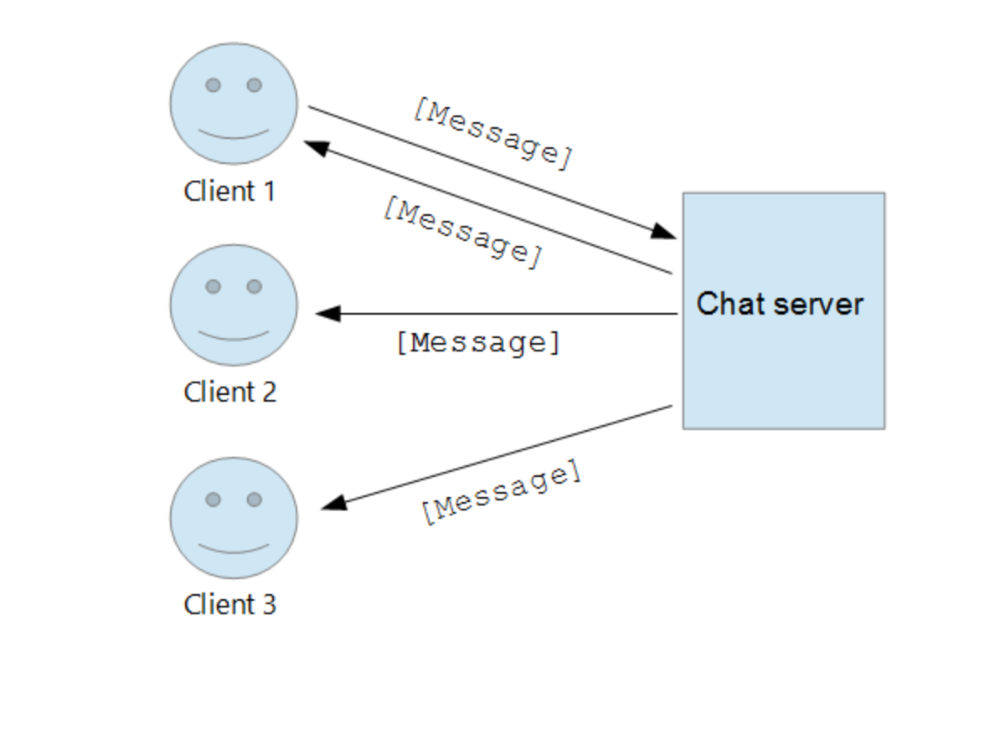

Docker
Twitter: @JosueChekSobre mí
Fullstack developerPHP / Laravel - Node JS - Vue.js - Electron
¿Que es Docker?
es un proyecto de código abierto que automatiza el despliegue de aplicaciones dentro de contenedores de software, proporcionando una capa adicional de abstracción y automatización de virtualización de aplicaciones en múltiples sistemas operativos.
Docker vs VM

Multiples contenedores

Balanceo de carga
Load Balancer F5
Docker Swarm


Interfaces con VUE

Theme
Reactividad (Tiempo Real)
Socket.io

Pusher
Aplicaciones de Escritorio